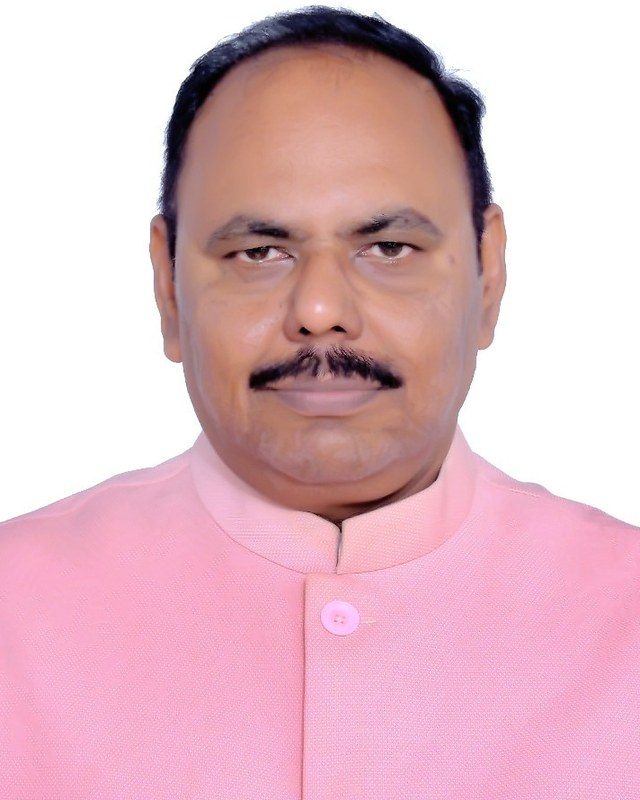
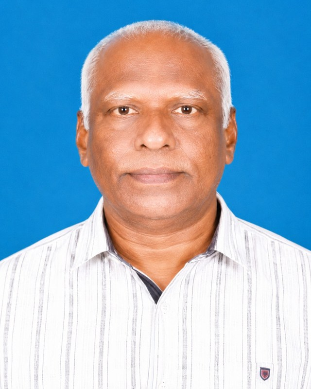
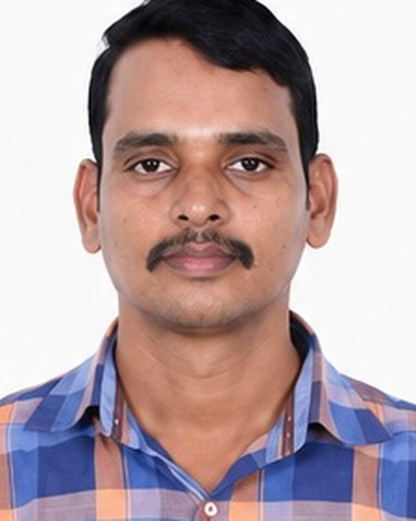
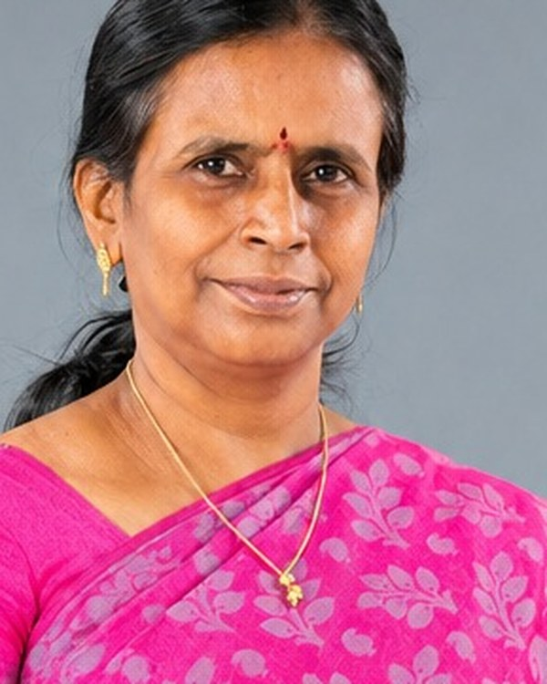

Welcome
The Institution of Electronics and Telecommunication Engineers was founded on 2 November 1953 and is today the country’s principal professional body for electronics, telecommunication, computer engineering and information technology. The Chennai Centre, established in 1955, carries that work into Tamil Nadu’s capital.
Members here come from the city’s engineering colleges, its research groups, its electronics and communications industry, and from public service. The Centre exists to give them somewhere to meet: a programme of technical talks and short courses through the year, students’ forums in colleges across the city, conferences, and the ordinary business of a professional society — admissions, elections, correspondence with the Institution’s headquarters at New Delhi.
The office is on the first floor of Prasad Chambers, 97 Peters Road, Gopalapuram (map below). Members and prospective members are welcome to write, telephone or call in.
Recent Programmes
All programmes-
 The Future of Autonomous Intelligence
International Webinar Series · Session 02 · Mr. Ganesan Narayanasamy
The Future of Autonomous Intelligence
International Webinar Series · Session 02 · Mr. Ganesan Narayanasamy -
 5G Today, 6G Tomorrow: Where AI Meets Next-Generation Connectivity
Joint Technical Meeting with IEEE Madras Section · Shri. Santhanakrishnan J, FIETE
5G Today, 6G Tomorrow: Where AI Meets Next-Generation Connectivity
Joint Technical Meeting with IEEE Madras Section · Shri. Santhanakrishnan J, FIETE -
 Journey Through Innovation
Idea2Venture Webinar Series · Session 01 · Ms. Shanmugha Jeyashree B
Journey Through Innovation
Idea2Venture Webinar Series · Session 01 · Ms. Shanmugha Jeyashree B
Next sessions of the International Webinar, Industry–Academia Interaction and Idea2Venture series will be announced on the Activities page.
Office Bearers, 2026–2028
All members
Chairman
Dr. D. Vijendra Babu
Vellore Institute of Technology, Vellore

Immediate Past Chairman
Er. N. Sridharan

Honorary Secretary
Dr. R. Karthikeyan
KCG College of Technology, Chennai

Honorary Treasurer
Dr. S. Sumathi
Sri Sairam Engineering College, Chennai
Visiting the Centre
Open in Google Maps ↗Centre Office
Prasad Chambers, 1st Floor
97, Peters Road
Gopalapuram, Chennai – 600 086
Tamil Nadu, India
Telephone 044-2835 0773
Email ietechennai@gmail.com
Monday to Saturday, working hours. Please telephone before visiting.